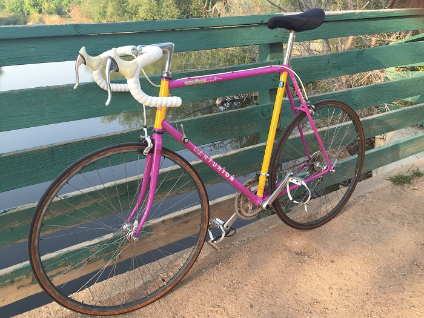
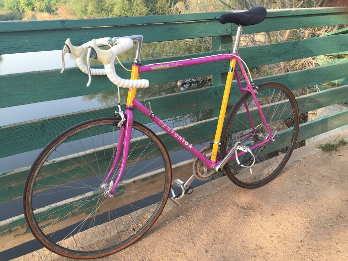
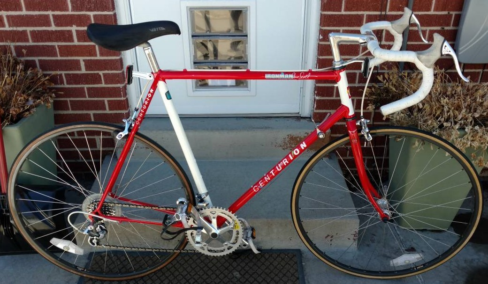
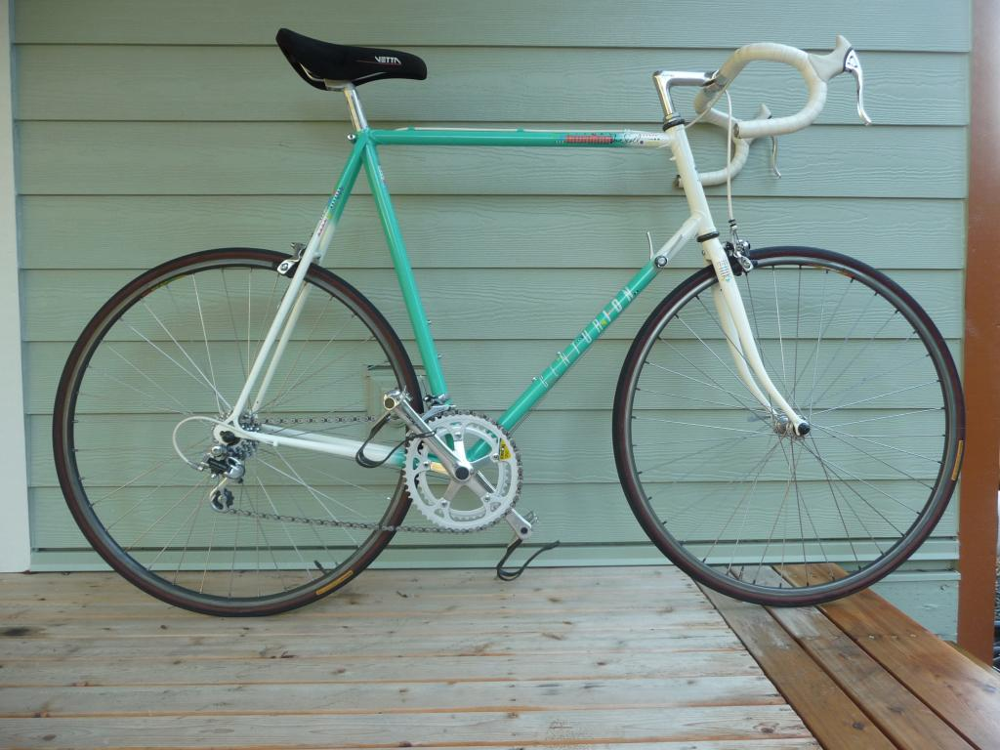
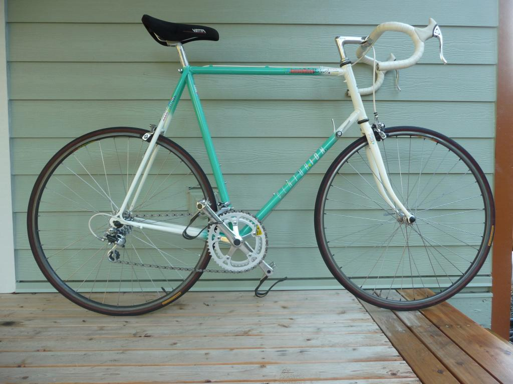
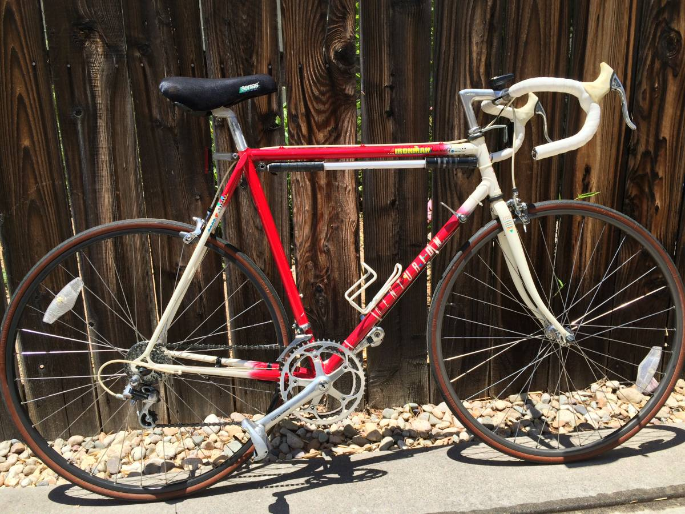
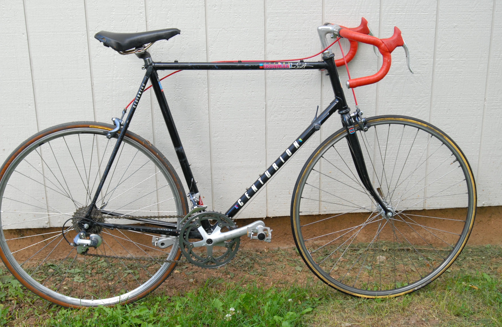
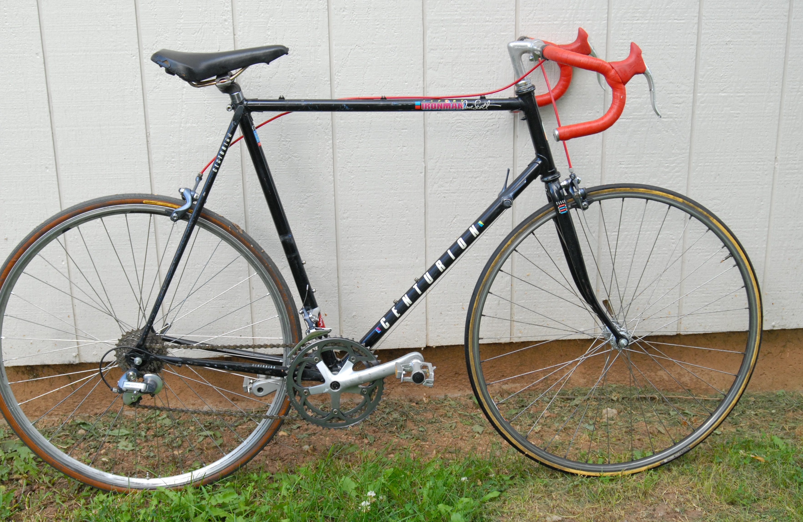
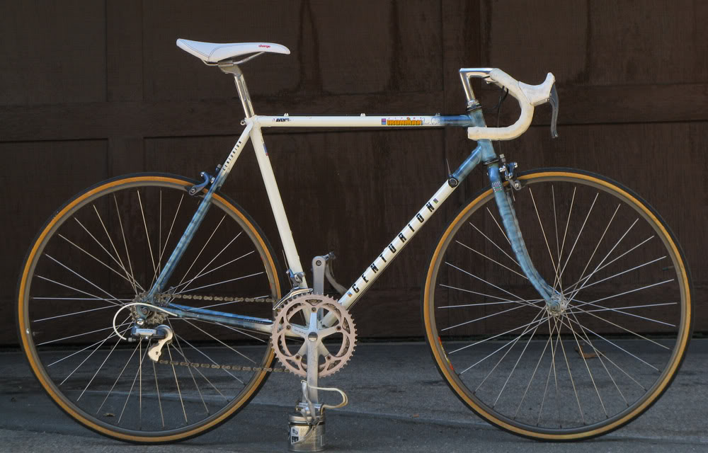

Starting in 1987 The Dave Scott Ironman was offered in two models the Expert and the Master. The Master retained the Shimano 600 Componentry and the Expert was the cheaper version of the Ironman, and it featured the new Shimano 105 components which was a redesigned grouppo from its predecessor 105 "Golden Arrow". 105 Brakes with SLR was favored at that time over the more expensive 600 since it featured the Shimano SLR system, 600 would get SLR a year later in 1988
It is unclear but in 1989 Centurion dropped the use of Shimano 105 and the expert was outfitted with Suntour GPX componentry. As with the rest of the centurion line 1989 would be the last year.
The sloped fork crown of the Master was replaced by a unicrown fork. the Copper Arayas were replaced with the Wolber Super Champion Alpines until 1987 and ultimately becoming the Araya CTL 370 in 1988 and 1989. The expert continued the famous ironman color of red/white, and for 1987 only it also came in the famous/infamous Magenta/Yellow "Miami Vice" theme.
1988 Brought on a couple changes but mainly was the Paint schemes that changed. The paint scheme has changed from contrasting head/Seat tubes to a fade paint job that the outside colors are the secondary and the primary color is in the middle.
The final year of the expert, in 1989 it received a grouppo change, Suntour's new grouppo GPX was introduced and was utilized on the 1989 Expert. also in this year they utilized a solid color for the first time on the Ironman's with the expert being a Solid Black color scheme.

 

1987 Ironman Expert Magenta/Yellow (source: fleslider)
1987 Ironman Expert Red/White (source:Unknown)
Specs:
| Frame | Frame - Tange #1 Steel, Lugged |
| Fork | Tange unicrown (TIG-welded) |
| General Groupset Notes | Shimano 105 (1050 Series) |
| Hubs | Shimano 105 126mm QR,(HB-1050)32f/32r except 62/64cm frames = 36f/36r |
| Rims/Spokes | Wolber Super Champion Alpine / 14g |
| Tires | Panaracer Tecnova 700c X 20 |
| Front Derailleur | Shimano 105 (FD-1050) |
| Rear Derailleur | Shimano 105 6 Speed SIS (RD-1050) |
| Shifters | Shimano 105 F(Friction)/R(6 Speed SIS) (SL-1050) |
| Chain | Shimano Uniglide |
| Cranks | Shimano 105 Biopace 52/42, 130mm Bolt spacing (FC-1050) |
| Freewheel | Shimano MF-Z012 6-Speed13-24t |
| Pedals | Shimano 105 Toe Clips with White Straps (PD-1050) |
| Headset | Shimano 105 (HS-1050) |
| Seatpost | Sugino SP-KCL 27.0 mm Graduated Scale (inches) |
| Saddle | Vetta Mundial Race Genuine Suede (included white lycra cover) |
| Bar/Stem | Nitto Olympiade 40cm / Nitto 90mm Stem |
| Brake Levers | Shimano 105 SLR w/AERO Brake Levers (BL-1051) |
| Brakes | Shimano 105 SLR Calipers (BR-1050) |
| Colors | Magenta/Yellow or Guards Red/White |
| Sizes | 48cm - 64cm(2cm Increments) |
| Weight | (56CM) 22.55 lbs , Frame- 4.55 lbs, Fork-1.50 lbs |
| MSRP | $520.00 USD |
 

1988 Expert Bright Marine Green/White (source unknown)
1988 Expert, Red/White (source Craigslist)
The Experts were "straight" fades, with one color blending into another
| Frame | Frame - Tange #1 Steel, Lugged |
| Fork | Tange unicrown (TIG-welded) |
| General Groupset Notes | Shimano 105 (1050 Series) |
| Hubs | Shimano 105 126mm QR, (HB-1050)(32h-48-60cm)(36h-62,64cm) |
| Rims/Spokes | Wolber Super Champion Alpine / 14g |
| Tires | Panaracer Tecnova 700c X 20 |
| Front Derailleur | Shimano 105 (FD-1050) |
| Rear Derailleur | Shimano 105 6 Speed SIS (RD-1050) |
| Shifters | Shimano 105 F(Friction)/R(6 Speed SIS) (SL-1050) |
| Chain | Shimano Uniglide |
| Cranks | Shimano 105 Biopace 52/42, 130mm Bolt spacing (FC-1050) |
| Freewheel | Shimano MF-Z012 6-Speed13-24t |
| Pedals | Shimano 105 Toe Clips with White Straps (PD-1050) |
| Headset | Shimano 105 (HS-1050) |
| Seatpost | Sugino SP-KCL 27.0 mm |
| Saddle | Vetta Suede |
| Bar/Stem | Nitto B115 Olympiade / Nitto Young 9cm Stem |
| Brake Levers | Shimano 105 SLR w/AERO Brake Levers (BL-1051) |
| Brakes | Shimano 105 SLR Calipers (BR-1050) |
| Colors | Guards Red/White, Marine Green/White |
| Sizes | 48cm - 64cm(2cm Increments) |
| Weight | (56CM) 22.55 lbs , Frame- 4.55 lbs, Fork-1.50 lbs |
| MSRP | $520.00 USD |
 

1989 Ironman Expert Black (source: fleslider)
1989 Ironman Expert Blue Smoke/White (source: unknown)
Specs:
| Frame | Tange #1 Steel, Lugged |
| Gruppo | Suntour GPX 7spd. |
| Brake Levers | Suntour GPX (BL-GP00) Note* |
| Brakes | Suntour GPX (BA-GP00-S) |
| Bottom Bracket | Tange/Kajita w/Lip Seals English/ISO: 1.370 x 24 |
| Chain | SunTour GPX Accushift |
| Cranks | Suntour GPX 52/42t (CW-GP00) |
| Derailleur R | Suntour GPX (RD-GP00 SSB) |
| Derailleur F | Suntour GPX 28.6mm Clamp, Bottom Pull FD-GP00 SSH |
| Freewheel | Suntour 7 Speed 13-14-15-17-19-21-24t (FW-AL00-U7) |
| Handlebars | Kusuki Winpista w/Padded Vinyl tape |
| Headset | Tange Levin CD |
| Hubs | 36 hole Suntour GPX hubs. Freewheel (HB-GP00-F/R) |
| Pedals | Sampson/SR Clipless |
| Rims/Spokes | Araya CTL-370 w/14g |
| Stem | SR Custom |
| Seatpost | SR LaPrade 27.2 mm L=220mm |
| Tires | Panaracer Tecnova II Clincher 700cx18, 135psi |
| Colors | Solid Black or Smokey Blue/White |
| Sizes | 48cm - 64cm(2cm Increments) |
| Weight | (60CM) 23 lbs 1/4oz , Frame-4 lbs 13-1/2oz, Fork-1lb 10-3/4oz |
| MSRP | $650.00 USD |
* Index Mode:23T Max, Friction Mode: 26T Max (max difference 13T), total capacity 26t

Source Unknown
2020 Vintage-Centurion.com